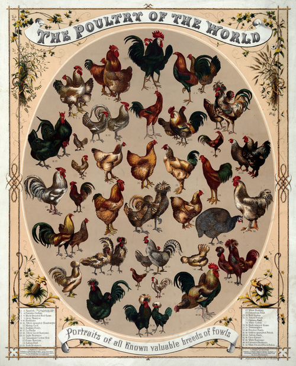

Tuesday, February the 9th, 2010
back to: title, date or indexes
In 1946, Jorge Luis Borges was appointed as poultry inspector for the Buenos Aires municipal market. He resigned immediately. Thus it was J W Gwin, rather than Borges, who went on to write Experiences Of A Poultry Literature Collector.

Thanks to My Ear-Trumpet Has Been Struck By Lightning for illustrative matter.